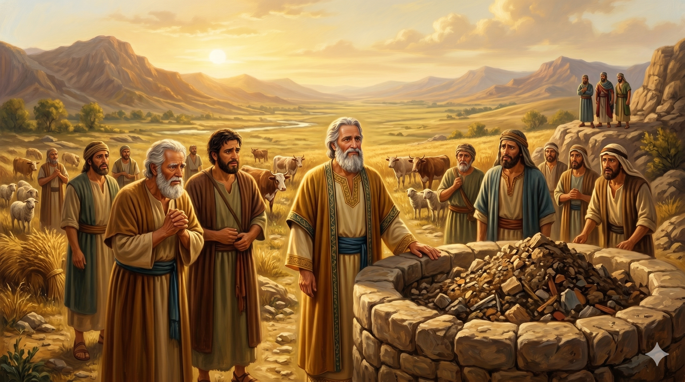

풍성한 수확물과 많은 가축 무리 앞에 선 이삭 — 그랄 평원의 황금빛 축복
이삭이 그 땅에서 농사하여 그 해에 백 배나 얻었고 여호와께서 복을 주시므로 그 사람이 창대하고 왕성하여 마침내 거부가 되어 양과 소가 떼를 이루고 종이 심히 많으므로 블레셋 사람이 그를 시기하여 그 아버지 아브라함 때에 그 아버지의 종들이 판 모든 우물을 막고 흙으로 메웠더라 아비멜렉이 이삭에게 이르되 네가 우리보다 크게 강성하였으니 우리를 떠나라 하였더라 — 창세기 26:12–16
이삭은 극심한 기근 속에서도 하나님의 명령에 따라 가나안을 떠나지 않고 그랄 땅에 머물렀습니다. 세상의 눈으로 보면 무모한 결정이었지만, 하나님의 약속을 믿는 순종에서 비롯된 행동이었습니다. 그 결과는 놀라웠습니다. 그 해에 백 배의 수확을 거두었고, 양과 소가 떼를 이루며, 마침내 거부(巨富)가 되었습니다. 성경은 이것을 분명히 "여호와께서 복을 주시므로"라고 밝힙니다. 이삭의 번영은 자신의 영리함이나 노력만의 결과가 아니라, 하나님의 직접적인 역사였습니다. 기근과 역경 한가운데서도 하나님의 복은 인간의 계산을 초월하여 흘러넘칩니다.
그러나 번영은 곧 시기를 불러왔습니다. 블레셋 사람들은 이삭이 강성해지자 두려움과 질투심에 아브라함 때부터 애써 판 우물들을 흙으로 막아 버렸습니다. 그랄 왕 아비멜렉도 이삭에게 "우리를 떠나라"고 요구했습니다. 하나님의 복은 세상의 환영을 보장하지 않습니다. 오히려 복을 받은 사람은 시기와 배제를 경험하게 될 수 있습니다. 이삭은 이 부당한 대우 앞에서 분노하거나 보복하지 않고 자리를 옮겼습니다. 그의 반응은 아버지 아브라함이 롯에게 땅을 양보했던 그 정신을 이어받은 것으로, 하나님을 신뢰하기에 내려놓을 수 있는 믿음의 모습이었습니다.

흙으로 막힌 우물 앞에 서 있는 이삭과 그의 종들 — 빼앗김 속에서도 평온한 얼굴
하나님의 복은 때로 우리가 예상치 못한 방식으로 찾아옵니다. 기근의 때, 가장 어렵고 불안한 순간에 이삭은 백 배의 수확을 경험했습니다. 우리도 인생의 "기근" 같은 계절에 하나님께 순종하면, 세상의 논리를 초월한 풍성함을 경험할 수 있습니다. 오늘 당신이 처한 어려움이 하나님의 역사를 막지 못합니다. 오히려 그 어려움 속에서 하나님의 복이 더욱 분명하게 드러납니다. 순종의 자리가 곧 복의 자리임을 기억하십시오.
번영 후에 찾아온 시기와 배제 앞에서 이삭의 반응은 우리에게 깊은 도전을 줍니다. 억울하고 부당한 일을 당했을 때 우리는 어떻게 반응합니까? 이삭은 다투지 않고 자리를 옮겼습니다. 하나님이 복의 근원이심을 알기에, 사람들이 우물을 막아도 하나님이 새 우물을 주실 것을 믿었습니다. 오늘 당신의 "우물"이 막혀 있다면, 분노와 다툼으로 시간을 쓰기보다 하나님이 예비하신 새 자리를 찾아 나아가는 이삭의 지혜를 따르십시오.
사람들이 당신의 우물을 막을 수 있지만, 하나님의 복 자체를 막을 수는 없습니다.
이삭을 복 주신 하나님이 오늘 당신의 하나님이십니다 — 기근 중에도 순종하십시오.
빼앗기고 쫓겨나도 하나님과 함께 있으면 새 우물은 반드시 열립니다.